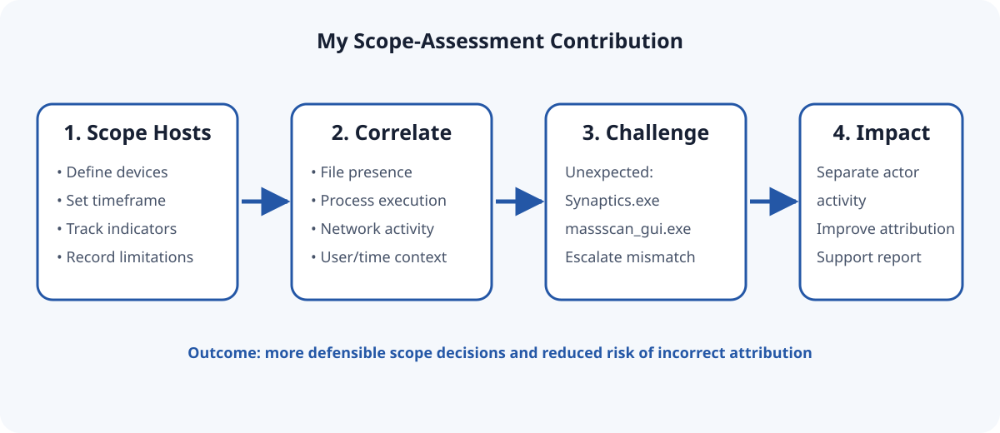
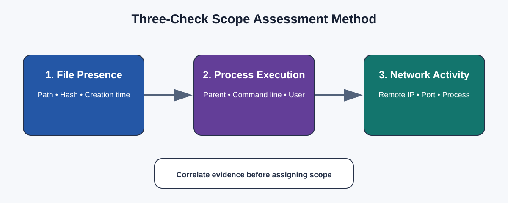
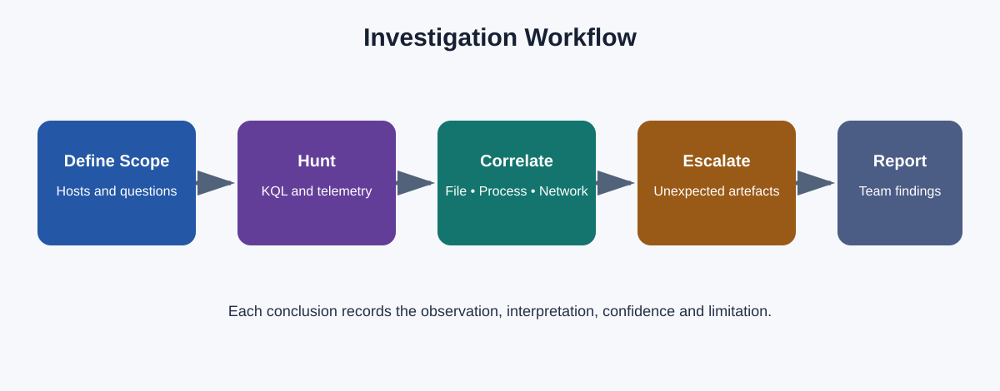
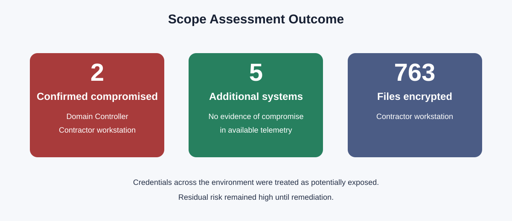
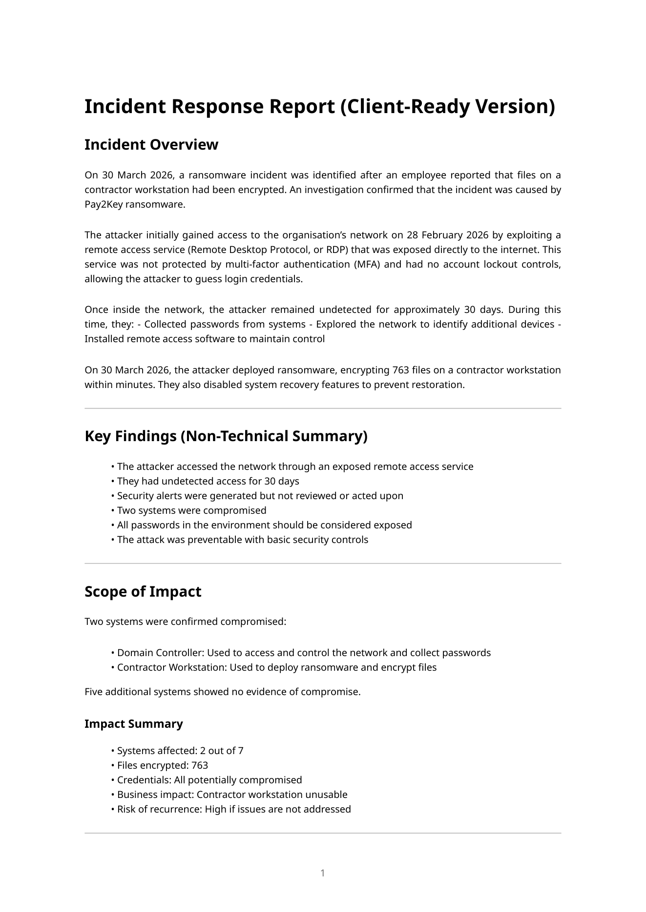
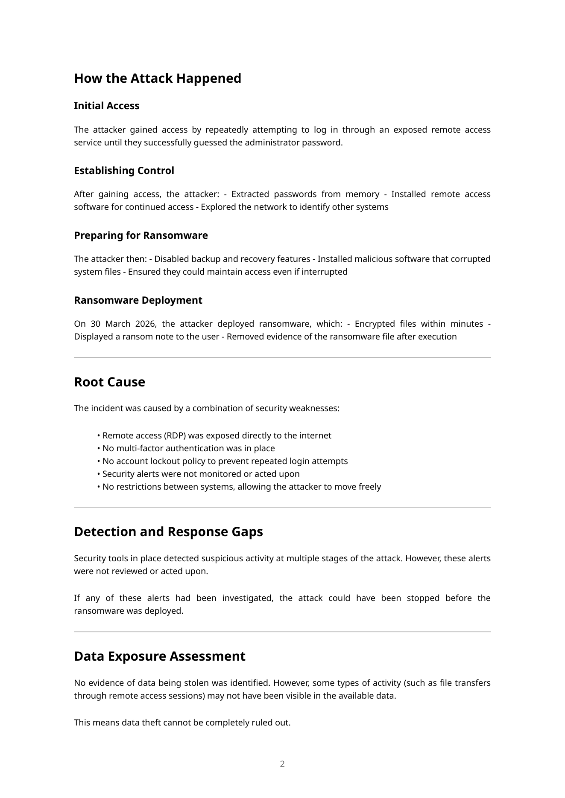

My contribution at a glance

My responsibility
I assessed candidate hosts and supported each scope decision by correlating suspicious file presence, process execution and network communication in Microsoft Defender XDR. I recorded evidence gaps and avoided describing “no evidence observed” as proof that compromise was impossible.

My standout finding
While reviewing the results, I independently identified Synaptics.exe and massscan_gui.exe on the contractor workstation. These artefacts did not fit the expected Pay2Key pattern. I escalated the mismatch, contributing to separation of additional actor activity and reducing the risk of incorrect attribution.
I read beyond the indicators I expected to find.
I did not automatically assign all suspicious activity to Pay2Key.
I raised findings that could change the investigation narrative.
My discovery supported a more accurate final report.
My workflow

Queries supporting my workstream
These are transparent portfolio reconstructions of my documented methodology because the supplied client report does not contain the original raw telemetry, technical appendices or case queries.
let SuspiciousFiles = dynamic(["Synaptics.exe", "massscan_gui.exe"]);
DeviceProcessEvents
| where FileName in~ (SuspiciousFiles)
| project Timestamp, DeviceName, AccountName, FileName,
ProcessCommandLine, InitiatingProcessFileName, SHA256
| order by Timestamp ascTests whether artefacts exist across candidate hosts.
Confirms execution and user/process context.
Checks external communication linked to activity.
Combines evidence into a defensible decision view.
Outcomes of my contribution
- Supported confirmation of compromise on the Domain Controller and contractor workstation.
- Supported assessment that five other systems showed no evidence of compromise in available telemetry.
- Identified unexpected artefacts that improved attribution accuracy.
- Helped avoid merging unrelated activity into the Pay2Key narrative.
- Contributed scope findings and limitations to the final client-ready report.

Challenges and lessons
A file hit alone is not enough. I correlated three evidence types.
I learned to state “no evidence observed” without overstating certainty.
Unexpected results can materially change attribution.
Evidence and conclusions must stand alone for reviewers.
Supporting evidence
The full report and rendered pages provide genuine project evidence. They show the overall collaborative case; the contribution narrative above explains the part I personally performed.

Scope and impact
Attack flow and root causeBrief investigation context
The wider simulated case involved Pay2Key ransomware, exposed RDP, approximately 30 days of undetected access, two compromised systems and 763 encrypted files. Other team members handled separate investigation workstreams. I do not claim ownership of their findings.
Interview summary: As Scope Assessment Analyst, I validated affected and unaffected hosts by correlating file, process and network telemetry. I independently flagged unexpected artefacts that helped separate additional actor activity and protect the accuracy of the final attribution.